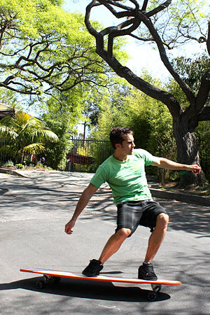
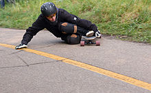
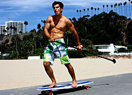

What is Longboarding?
Longboarding is the act of riding on a longboard skateboard. A longboard is greater in size (both length and width) than its smaller counterpart, the skateboard, and has more stability, traction and durability due to lower wheel durometers. Many, but not all longboards, use trucks (axles) that contain different geometric parameters than a skateboard as well. These factors and their variation have given way to a variety of disciplines, functions and purposes for a longboard. The angles at which some longboards can turn, as well as their ability to coast long distances make them more suitable for cruising on streets than regular skateboards.
What is Sliding?
Sliding is the most effective braking technique for downhill skateboarders. It allows a skater to reduce his or her speed much more quickly than footbraking, but requires a wider area depending on his ability to control the slide. It has also evolved into its own discipline of skateboarding, with riders performing various tricks and rotations while sliding. Sliding can be performed on any wheel. Harder wheels (83-86a) will slide less smoothly and break traction easier while softer wheels (70-80a) will be harder to break traction but will lead to a smoother more controllable slide. Slides can be done standing upright or with one or two hands placed on the road to allow the rider to execute technical slides in any number of positions.  When performing hands-down slides, protective slide gloves must be worn. These gloves can be purchased or made at home. They are usually leather gloves with sliding pucks made of hard, low-friction plastics such as UHMWPE, Corian, or Delrin attached by velcro or glue. Sliding gloves can also be bought online or at local skate shops. Gloves are commonly made by companies such as Sector 9, Vault, Landyachtz, Arbor and Loaded. Slides can also be performed on banks and transitions in a skate park. When a skater slides to a complete stop, it is called a shutdown slide. A drift that reduces the rider's speed without bringing him to a complete stop is called a speed check. When the board rotates more than 90 degrees and then returns to its original position over the course of the slide it is called a pendulum. There are myriad more technical and challenging slides that can be done such as laybacks, pressure spins, 5-0 slides, and stand-up rotations. One of the most popular slide and most basic hands-down slide is called the Coleman. Made popular by Cliff Coleman, the Coleman slide is the most popular slide used to come to a complete stop, as you do a complete 180 degree turn with one hand on the ground.
History of Longboarding
Skateboarding came before longboarding and surfing came before both. Skateboarding originated in Hawaii in 1959. When the surf was low or too rough, surfers would "sidewalk surf" or skateboard. Skateboarding became popular among others and became a popular sport/hobby. Skateboards eventually led to the creation of longboards. Early longboards were homemade contraptions to make the board longer for teenagers who found skateboards too short for use. Roller-skate wheels were typically used to assemble these boards. Modern longboarding and skateboarding came to be in the 1970s when urethane wheels were invented. They also designed trucks especially for the sport which allowed for sharper turning and carving. The new wheels and trucks created the faster and smoother feel of today's boards. Longboarding and skateboarding still weren't very popular in the 70's. In the beginning skateboarders would drain pools to use to skate in as seen in The Lords of Dogtown. Skateboarding faded in popularity in the 80's. Skateboarders gained the bad reputation of being rebellious anarchists and became unpopular with the older generations. Due to the bad reputation and high insurance costs with injuries and lawsuits skateboarding quickly died. However the sport did not vanish forever and became popular again in the 90's when professionals began popping up in the media such as Tony Hawk and others. Longboarding and skateboarding have become very popular since the 90's. Longboarding hasn't been the most popular of the two sports but they are very linked in history. Longboarding is becoming even more popular in just the past few years.